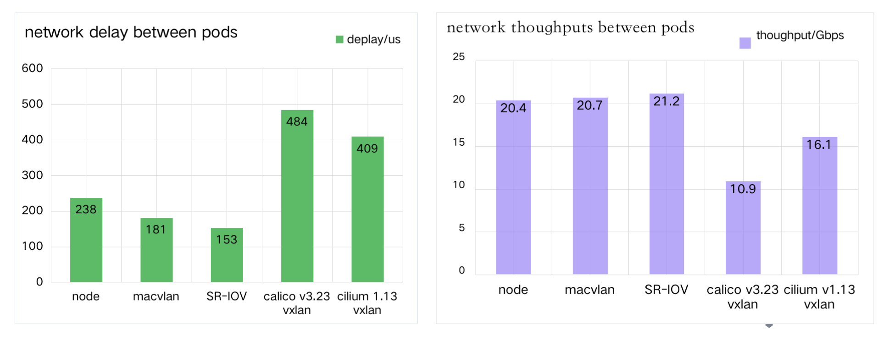

Underlay 网络和 Overlay 网络方案
云原生网络中出现了两种技术类别："Overlay 网络方案" 和 "Underlay 网络方案"。 云原生网络对于它们没有严格的定义，我们可以从很多 CNI 项目的实现原理中，简单抽象出这两种技术流派的特点，它们可以满足不同场景下的需求。
Spiderpool 是为 Underlay 网络特点而设计，以下对两种方案进行比较，能够更好说明 Spiderpool 的特点和使用场景。
Overlay 网络方案 IPAM
本方案实现了 Pod 网络同宿主机网络的解耦，例如 Calico、Cilium 等 CNI 插件， 这些插件多数使用了 vxlan 等隧道技术，搭建起一个 Overlay 网络平面，再借用 NAT 技术实现南北向的通信。
这类技术流派的 IPAM 分配特点是：
-
Pod 子网中的 IP 地址按照节点进行了分割
以一个更小子网掩码长度为单位，把 Pod subnet 分割出更小的 IP block 集合，依据 IP 使用的用量情况，每个 node 都会获取到一个或者多个 IP block。
这意味着两个特点：第一，每个 node 上的 IPAM 插件只需要在本地的 IP block 中分配和释放 IP 地址时，与其它 node 上的 IPAM 无 IP 分配冲突，IPAM 分配效率更高。 第二，某个具体的 IP 地址跟随 IP block 集合，会相对固定的一直在某个 node 上被分配，没法随同 Pod 一起被调度漂移。
-
IP 地址资源充沛
只要 Pod 子网不与相关网络重叠，再能够合理利用 NAT 技术，Kubernetes 单个集群可以拥有充沛的 IP 地址资源。 因此，应用不会因为 IP 不够而启动失败，IPAM 组件面临的异常 IP 回收压力较小。
-
没有应用 "IP 地址固定"需求
对于应用 IP 地址固定需求，有无状态应用和有状态应用的区别：对于 Deployment 这类无状态应用，因为 Pod 名称会随着 Pod 重启而变化， 应用本身的业务逻辑也是无状态的，因此对于 "IP 地址固定" 的需求，只能让所有 Pod 副本固定在一个 IP 地址的集合内；对于 StatefulSet 这类有状态应用，因为 Pod name 等信息都是固定的，应用本身的业务逻辑也是有状态的，因此对于 "IP 地址固定"需求，要实现单个 Pod 和具体 IP 地址的强绑定。
在 "Overlay 网络方案"方案下，多是借助了 NAT 技术向集群外部暴露服务的入口和源地址，借助 DNS、clusterIP 等技术来实现集群东西向通信。 其次，IPAM 的 IP block 方式把 IP 相对固定到某个节点上，而不能保证应用副本的跟随调度。 因此，应用的 "IP 地址固定"能力无用武之地，当前社区的主流 CNI 多数不支持 "IP 地址固定"，或者支持方法较为简陋。
这个方案的优点是，无论集群部署在什么样的底层网络环境上，CNI 插件的兼容性都非常好，且都能够为 Pod 提供子网独立、IP 地址资源充沛的网络。
Underlay 网络方案 IPAM
本方案实现了 Pod 共享宿主机的底层网络，即 Pod 直接获取宿主机网络中的 IP 地址。这样，应用可直接使用自己的 IP 地址进行东西向和南北向通信。
Underlay 网络方案的实施，有两种典型的场景：一种是集群部署实施在"传统网络"上；一种是集群部署在 IAAS 环境上，例如公有云。以下总结了"传统网络场景"的 IPAM 特点：
-
单个 IP 地址应该能够在任一节点上被分配
这个需求有多方面的原因：随着数据中心的网络设备增加、多集群技术的发展，IPv4 地址资源稀缺，要求 IPAM 提高 IP 资源的使用效率； 对于有 "IP 地址固定"需求的应用，其 Pod 副本可能会调度到集群的任意一个节点上，并且，在故障场景下还会发生节点间的漂移，要求 IP 地址一起漂移。
因此，在集群中的任意一个节点上，一个 IP 地址应该具备能够被分配给 Pod 使用的可能。
-
同一应用的不同副本，能实现跨子网获取 IP 地址
例如，一个集群中，宿主机1的区域只能使用子网 172.20.1.0/24，而宿主机2的区域只能使用子网 172.20.2.0/24，在此背景下， 当一个应用跨子网部署副本时，要求 IPAM 能够在不同的节点上，为同一个应用下的不同 Pod 分配出子网匹配的 IP 地址。
-
应用 IP 地址固定
很多传统应用在云化改造前，是部署在裸金属环境上的，服务之间的网络未引入 NAT 地址转换，微服务架构中需要感知对方的源 IP 或目的 IP， 并且，网络管理员也习惯了使用防火墙等手段来精细管控网络安全。
因此，应用上云后，无状态应用希望能够实现 IP 范围的固定，有状态应用希望能够实现 IP 地址的唯一对应，这样，能够减少对微服务架构的改造工作。
-
一个 Pod 的多网卡获取不同子网的 IP 地址
既然是对接 Underlay 网络，Pod 就会有多网卡需求，以使其通达不同的 Underlay 子网，这要求 IPAM 能够给应用的不同网卡分配不同子网下的 IP 地址。
-
IP 地址冲突
在 Underlay 网络中，更加容易出现 IP 冲突，例如，Pod 与集群外部的主机 IP 发生了冲突，与其它对接了相同子网的集群冲突， 而 IPAM 组件很难感知外部这些冲突的 IP 地址，多需要借助 CNI 插件进行实时的 IP 冲突检测。
-
已用 IP 地址的释放回收
因为 Underlay 网络 IP 地址资源的稀缺性，且应用有 IP 地址固定需求，所以，"应当"被释放的 IP 地址若未被 IPAM 组件回收，新启动的 Pod 可能会因为缺少 IP 地址而失败。 这就要求 IPAM 组件拥有更加精准、高效、及时的 IP 回收机制。
这个方案的优势有：无需网络 NAT 映射的引入，对应用的云化网络改造，提出了最大的便利；底层网络的火墙等设备，可对 Pod 通信实现相对较为精细的管控；无需隧道技术， 网络通信的吞吐量和延时性能也相对的提高了。
Overlay CNI 和 Underlay CNI 的性能
Overlay CNI 需要借助隧道封装和宿主机转发实现跨主机的 Pod 通信，而 Underlay CNI 可实现直接对接宿主机网络，因此在网络延时和吞吐量表现上有差异。
在一个具备 2 个裸金属节点的集群上，安装一个 25G mellanox CX5 网卡，分别测试如下：
-
2 个裸金属节点间的网卡的性能
-
基于 macvlan 的跨节点 Pod 网络性能
-
基于 SR-IOV 的跨节点 Pod 网络性能
-
基于 calico(v3.23) vxlan 的跨节点 Pod 的网络性能
-
基于 cilium(v1.13) vxlan 的跨节点 Pod 的网络性能

最终的测试报告如上所示，诸如 macvlan 和 SRIOV 的 Underlay CNI 性能较好。